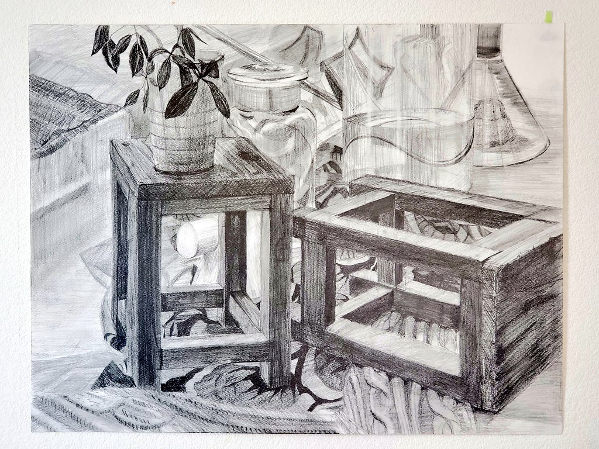
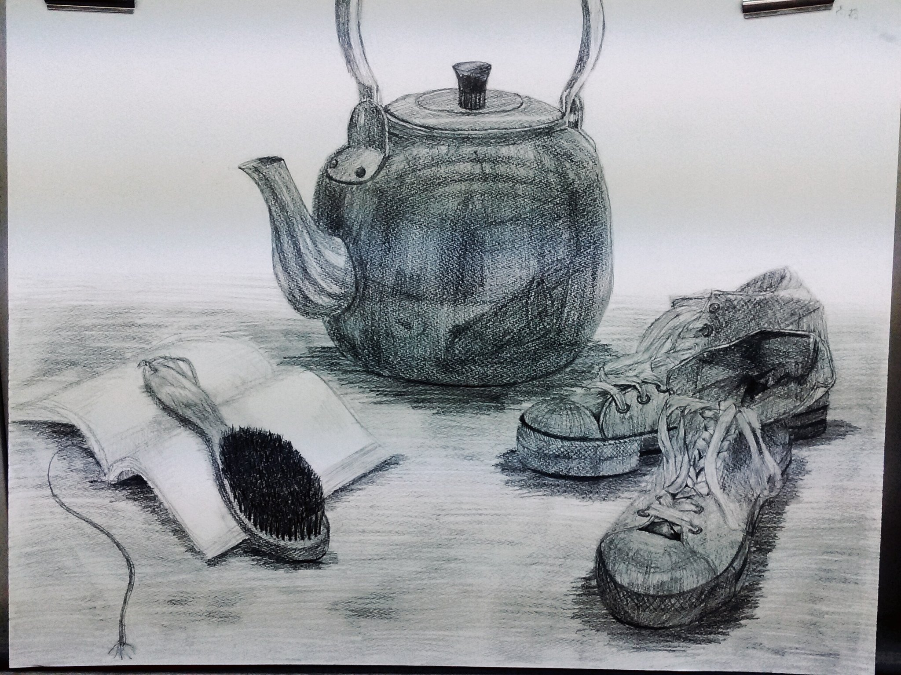
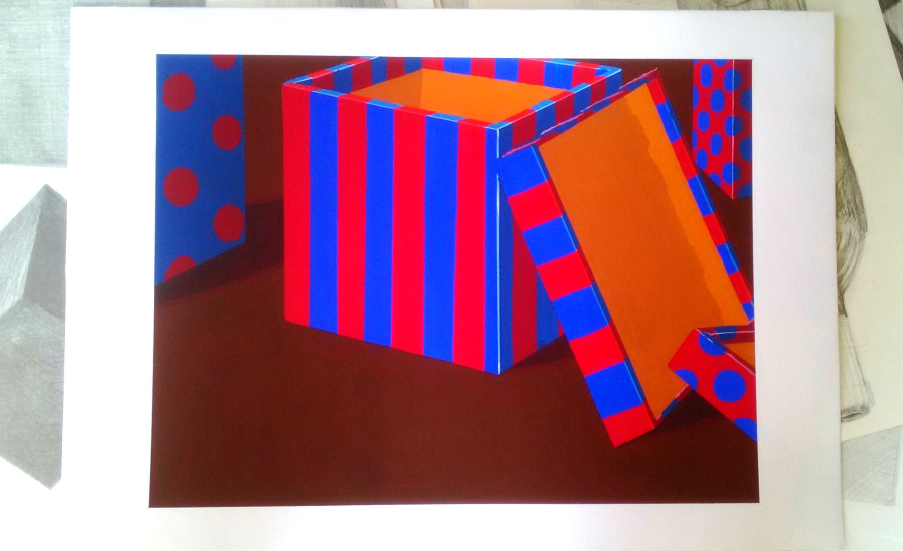

メインイメージ
高橋 百合乃Takahashi Yurino
略歴
1999年7月：神奈川県川崎市 生まれ
2018年3月：駒場学園高等学校 普通科 特別進学コース 卒業
2018年4月：武蔵野美術大学 造形学部 デザイン情報学科 入学
2022年3月：武蔵野美術大学 造形学部 デザイン情報学科 卒業見込み
人柄
人とモノの間の情報のデザインを学んでいます。人の行動に興味があり、大学ではブランディングデザイン、エクスペリエンスデザインなど人の生活をより良くするデザインの授業を中心に受けています。将来は自分で考えたサービスを世に出したいです。
教職課程(高等学校教諭一種免許状/情報)を履修しており、情報システムやネットワークの知識があります。Excelや簡単なプログラミング(Perl,C,Python)も可能です。
技術
Adobe Illustrator : ★★★★★
Adobe Photoshop : ★★★★・
Adobe XD : ★★★★・
Adobe Premiere Pro : ★★★・・
HTML,CSS : ★★★★・
Works過去の制作物
サービス系
デジタルグラフィック系
紙もの/アナログ
カリ美企画(教職有志の課外活動)
カリタス女子中学高等学校の美術室前のスペースを武蔵美生が借りて、作品の展示や中高生向け企画の設置やフリーペーパーの配布などを行う活動。外部リンク→カリ美ブログ
Gallery
美術予備校時代の作品です。




